注1：本文包含所有结局路线（6人物线+3结局）的剧情流程，部分次要细节及过于分散的剧情存在调整。
注2：文中红字部分为高周目新增剧情；黄字部分为各人物路线中的剧情；斜体部分为重要支线剧情；青字部分为妄想选择肢。
第1章 Eyes in eyes
“那道视线，是谁的？”
西条拓巳今年17岁。他从小到大，都能感觉到一股莫名的视线身后盯着自己，但他一直都没能找到这股视线的来源。拓巳现在就读于翠明学园，平时独自租住在涩谷一幢大楼楼顶的集装箱中。他是个典型的家里蹲死宅（但本人不承认），沉迷于网络游戏ES和动画Blood Tune，最喜欢女主角星来，拥有一柜子的美少女手办，而且时不时就会陷入自己脑内的妄想中。拓巳基本不去学校，但仍保持着最低限度的出勤。他同样不关心新闻，直到有一次他在游戏里认识的网友Grim告诉他，在他家附近正发生一系列被称为“新世代的疯狂”的连环猎奇事件。第一起事件是5个相互认识但毫无自杀动机的男女高中生从高层楼顶集体跳楼自杀，第二起是一名男子的腹部被切开，体内被塞入了一具胎儿尸体。之后Grim又发来一张他画的简笔画，说这是受害人的尸体照片。上面是一个潦草的人形和一系列十字形的符号。
正当拓巳浏览这一系列事件时，聊天室里一个ID为“将军”的网友声称自己也在涩谷，并预言这一系列事件将会继续发生。他发给了拓巳一条不明所以的公式和一系列图片，那些图片竟然是被众多十字利刃钉在墙上的尸体照片！不仅如此，“将军”在离开聊天室时留下了一句“那道视线，是谁的？”让拓巳不寒而栗，就像他的一切都被这个名叫“将军”的人掌握了一样。
一位坐着轮椅的少年在网吧37号单间中看着聊天室中的两人的聊天内容。他知道，那幅简笔画正是将出现在下一次“新世代”事件中的妄想。“将军”不仅要警告拓巳，还要对他施加精神压力。
次日是拓巳必须去学校以保证出勤的一天。他唯一的好友三住大辅告诉拓巳，有目击者证实跳楼的5人是他杀，而且凶手似乎是个女性。（妄想1：杀人凶手的样貌；杀人现场的死猫）
医院的一间病房中，“将军”告诉一直在照顾他的梨深，NOZOMI集团已经开始接触拓巳了。在“诺亚II”即将竣工的现在，他必须要加快拓巳的觉醒进度。但梨深始终无法接受拓巳备受折磨，“将军”终将殒命的结果。她决定靠自己的力量保护拓巳不让他觉醒，摧毁诺亚II，并且拯救“将军”。
晚上从网吧回家途经的偏僻小巷里，拓巳再次感受到了背后那道强烈的视线，随之而来的还有细微的耳鸣声。在四周死一般的寂静之中，他发现路上散落着许多锋利的十字锥，还从小巷中传来了金属的敲击声。他循声而去，却看到小巷尽头一个男人被大量十字锥钉在混凝土墙上，而一名浑身浴血，身穿翠明学园校服的少女正手握着十字锥，站在那里望着尸体。这一场景竟与“将军”发来的图片一模一样！更让拓巳害怕的是，少女转身看到了拓巳，竟直接叫出了拓巳的名字！拓巳吓得转身就跑回了家。
梨深追着一个拿着发出细微机械音的包的人影跑进了小巷中，但并没能追上。在她面前的是已经被几把十字锥钉在墙面上的男人。然而，就在她移开视线寻找拓巳的几秒间，那男人身上突然多了几十把十字锥，并迸出了大量的鲜血。不仅如此，她自己身上的衣服也变成了她从未见过的染血的校服，手中也多出了一把沾满鲜血的十字锥！但那鲜血和多出的十字锥却还只是妄想在现实中的投影，现在还没有实体。在这同步的妄想之中，她身后却突然传来了拓巳的声音。她悲喜交加地转过身……

回到家后，惊魂未定的拓巳发现自己竟不小心捡了一把十字锥带了回来。他认为“将军”就是那个迷之少女。虽然他想着报警但却担心随之而来的一系列麻烦事和自己的安全，因此选择了逃避。
AH综合病院的一位护士志乃正在电脑上查看着“将军”与拓巳的聊天记录，但当她正想把聊天记录复制给另一个男人时，聊天记录的发送时间却突然变了。那个男人说这是对方为了把聊天伪装成拓巳自导自演而改变了现实。
就在拓巳逃避于网游ES中一整天后，小他一岁的妹妹七海来看他了。（妄想2：七海主动索吻；七海被自己毒杀）她说父母让她带拓巳去买个手机，但拓巳拒绝了，还冷淡地赶走了她。
次日又是上学日，但拓巳在上学路上却发现自己好像被一名戴眼镜的少女跟踪着。晚上放学后，拓巳在网咖37号屋上网时，偶然发现自己隔壁的36号包间的人正在查阅着“新世代”的相关资料！拓巳害怕得跑掉，（妄想3：优爱送还他的学生证；优爱手持十字锥被车撞死）却与那名少女在街上偶遇。她自称楠优爱，在读3年级，并主动将腿脚受伤的拓巳送回了集装箱，还对拓巳的星来手办表现出了极大的兴趣。（妄想4：优爱的爱的告白；优爱的病娇告白）两人约定明天放学后一起去店里预约新发售的星来手办。
次日两人一同去预订了手办，优爱还向拓巳表现出了明显的好感。拓巳和优爱交换了联系方式，但内心与他人交流的恐惧和对优爱动机的怀疑让他没有理会优爱的联络。几天后拓巳来到学校却见到了担心着他的优爱，不仅如此，优爱还全盘接受了拓巳宅男的一面，并约定了放学一起回家。
但在回家路上，拓巳问起优爱书包上挂着的“呕吐蛙”挂饰时，（妄想5：拓巳想起这是和七海手机上同款的挂饰；拓巳想起这是那天在网吧36号包间见过的挂饰）优爱在惊慌中不慎打翻了书包，掉出的笔记本中竟然全都是“新世代的疯狂”相关事件的调查笔记！拓巳在恐惧之下想逃却被优爱抓住。优爱一改往日娇柔的神情，冷酷地逼问着拓巳，还拿出了拓巳捡到的那把十字锥——是那天优爱来拓巳家时发现的。不仅如此，她还发现拓巳常去的37号包间的电脑里，在事件发生前一天就留存有的凶杀案现场的图片——那正是当时“将军”发给拓巳的图片。之后，优爱拿出了打印的拓巳与“将军”的全部聊天记录，拓巳这才发现聊天记录上“将军”的消息发送时间全都变成了事件发生当晚——而那天拓巳确实白天去了学校，晚上在网咖上网。因此优爱认为“将军”正是患有人格分裂症的拓巳自导自演的闹剧！
第2章 Click me
从小，拓巳就坚信自己拥有预知未来的能力，因为他小时候所妄想的郊游巴士事故场景与新闻报道的事故场景十分相似。再加上他很反感父母对他的过渡溺爱而养成了自闭的性格，曾被AH综合医院精神科诊断为PTSD。
不管拓巳怎么调查，一切都表明优爱说的都是事实。拓巳不由得去找小时候常找的心理医生高科看病，（妄想6：高科医生肯定拓巳而否定优爱；高科医生说拓巳已经在精神科封闭住院七年，一切都他的幻觉）但高科医生说拓巳没有心理疾病。（妄想7：星来温柔地杀死了拓巳；女性杀人犯杀死了拓巳）诊断过程中，拓巳注意到医院的心理测试单一角写着“Nozomi”字样，这在他小时候来看病时也见到过。
因为不想被网友们看不起，拓巳极不情愿地去详细了解了已经发生的猎奇事件。第一起“集体跳楼”发生在9月7日，是5个相互认识但毫无自杀动机的三男两女高中生手拉着手从上锁的高层楼顶集体跳楼自杀，并且没在他们身上找到楼顶的钥匙，所以很可能是他杀。第二起“怀孕男”发生在9月19日，是一名单身的21岁大学生，其腹部被切开，胃里被塞入了一具刚出生，有8个月大的婴儿尸体后缝合起来。第三起正是拓巳目击的“十字架”，56岁的大学教授被绞死后，又被凶手用十字锥钉在水泥墙上，附近的居民称听见了长时间敲钉子的声音。还有说法称这些事件与两个月前涩谷发生的导致八人死亡的3级地震有关。另一方面，刑警判安二却从“十字架”案发现场附近的监控中发现了拓巳手持十字锥逃离犯罪现场的身影。
拓巳为了消除优爱所言自己的嫌疑，将“将军”发来的凶案现场图片做了处理，却发现那照片暗处竟然拍到了自己逃离现场时的影像！也就是说，“将军”28日发来了29日的现场照片。更让拓巳恐惧的是，图片属性的备注栏中还写着一句话：“那道视线，是谁的？”
惊慌失措的拓巳在论坛上看到了一则传言，PHANTASM乐队发售的新曲歌词似乎预言了这一系列凶案。感到已经走投无路的他约了三住前往乐队的演唱会现场，但却发现乐队成员都不是自己在“十字架”现场看到的那个少女，但主唱FES却在舞台上拿着一把剑型的话筒座，其造型很是奇特。（妄想8：FES主动与拓巳拥抱；FES跳楼自杀）（妄想9：游戏角色邀请拓巳进入游戏世界；被游戏角色所嫌弃）
这一天放学后，拓巳终于还是被七海抓住，强迫去了手机商场。但就在拓巳趁七海不注意准备偷溜时，他却看到一个穿着翠明校服的少女拿着一把花哨的大剑旁若无人地站在街上。七海给他买好了手机，又送给拓巳一个最流行的大眼呕吐蛙，并强行挂在了拓巳的手机上。
拓巳回到家后才从网友Grim处得知，当天发生了“新世代”的第四起凶案“吸血闺”。一名被害人被抽干了血液，抛尸在车站公厕中，死者的皮肤呈现出绿色，尸体照片还被凶手堂而皇之地挂在了网拍网站上竞拍！不仅如此，凶手还用血在受害者身边的墙上写下了：
“那道视线，是谁的？”
第3章 将军
很长一段时间没有再碰见优爱让拓巳渐渐放下心来。这天晚上拓巳久违地从网吧中出来后，在大街上再次看到了之前那名肩扛花哨大剑的少女，但周围的人似乎都没有注意到她。那少女径直走向拓巳，确认了拓巳的确能看到她的大剑——Di-Sword。（妄想10：被濑名裸足调戏；被濑名幽灵附身）她在临走前告诉拓巳，她是3年级的苍井濑名，拓巳能看见Di-Sword说明他也被“召集”了，还让拓巳看到什么异常就立刻通知她。但拓巳对少女的说明却是一头雾水。
次日拓巳到校后，三住告诉他自己发现D班的岸本绫濑竟然就是PHANTASM的主唱FES，（妄想11：绫濑向拓巳求婚；绫濑砍断了三住的手臂）但绫濑似乎对两人没什么兴趣，只是嘟囔着“找到剑就会得救”之类不明所以的话。放学路上，拓巳受到了便衣刑警判安二的盘问，但目前警方似乎并没有打算对他出手，只是确认了他目击了“十字架”现场和女性凶手就离开了。
回到家后，拓巳再一次感觉到了那股神秘的视线。（妄想12）然而，一位少女的声音却突然在他身后响起，竟然是那个在“十字架”现场看到的少女！拓巳莫名地想起了少女的名字是咲畑梨深，但除了“十字架”现场以外却没有与她相关的记忆。梨深似乎并不知道“十字架”凶案现场所发生的事，还自称从一年级开始自己就与拓巳和三住认识了，并打电话给三住让拓巳确认了三人之间的关系一直是非常要好的。但陷入恐惧和混乱的拓巳无法接受这一状况，赶走了梨深。
次日拓巳再次去医院找高科医生，但护士叶月却告诉他高科医生正在因病休养。感到走投无路的拓巳决定从那个名叫濑名的少女肩扛的剑——Di-Sword入手。拓巳从网上查到Di-Sword (Delusion ideal-sword)是传说中邪心王古拉吉欧鲁创造的妄想之剑，它以人类的负面情感为食，由七名黑骑士持有，并与其创造者古拉吉欧鲁战斗。拓巳在一家偏僻的店里买到了一把看上去就很廉价的“Di-Sword”，还附送了他一个很劣质的手镯。回家后拓巳又遇到了来探望他的妹妹七海，为了早点赶她走顺势将那手镯送给了她。
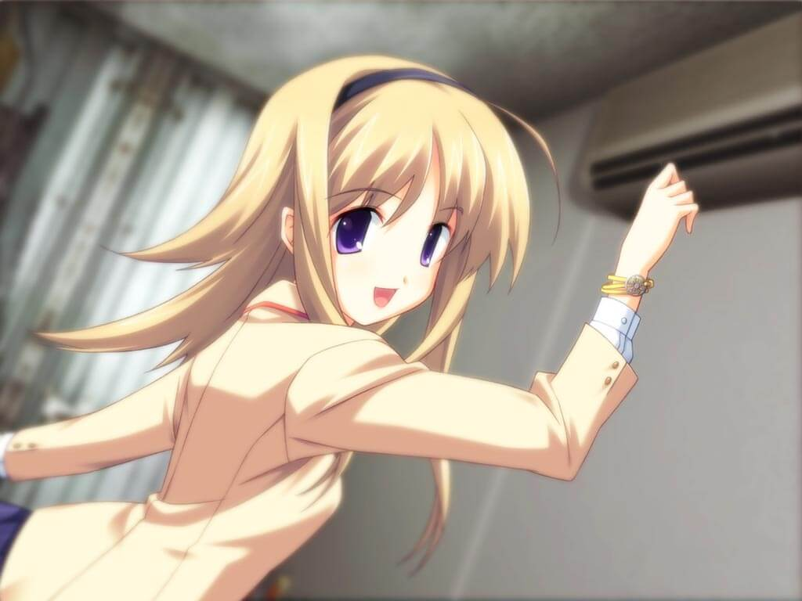
梨深初次来到拓巳班上，使用了Giga-La-Maniac的妄想共鸣能力。虽然两天前对拓巳使用时收效甚微，但她还是成功地对班上的学生灌输了有关她的虚假的记忆。
虽然想相信自己在家里遇到那个恶魔女梨深是幻觉，但几天后拓巳上学时梨深却仿佛理所当然地出现在了他的班级。而且这天还有一个看上去很弱气的转校生折原稍转进了拓巳他们班，（妄想12A：稍和梨深爆发冲突；稍和梨深是同伙）在她经过拓巳身边时，拓巳似乎还听到了幻听一般的低语。课后面对来找他询问请问的梨深，拓巳在极度的恐惧和不安下逃离，却偶然发现自己的手机上有个不知名的未接来电，（妄想13：傲娇女的告白要求；优爱的威胁）但来电留言中却是“请让过”的旋律和一声巨大的蜂鸣声。
与此同时，刑警判安二也从拓巳曾经的小学老师处获知拓巳从小就经常因病请假，并且他当时的班主任死于一次学生郊游时的大巴车事故，但拓巳那天却因病情恶化请假，没有乘上那辆车。
这天晚上7点左右拓巳去便利店买便当时，却发现街上空无一人（妄想14：殴打店员泄愤；自己是劫持犯而被警察击毙），就连平时最繁华的涩谷十字路口和车站也不见人影。但就在拓巳惊慌失措之时，他看到十字路口中央有一个坐着轮椅的，像小学生一样的人影。那个人摇着轮椅向拓巳靠近，自称他就是“将军”，并告诉他要快点觉醒，否则会死更多的人。然而拓巳总算看清了，虽然这个人的声音听起来年纪不大，但他的脸却如同老人一般遍布皱纹眼窝凹陷！瞬间，拓巳发觉自己正跪在马路中央，大街上又重新充满了对他指指点点的人流，而梨深正在他身边焦急地呼唤着他的名字。虽然还是对梨深抱有不信任，但在梨深的拥抱和安慰下，拓巳总算安心了一些，与梨深离开了马路中央。
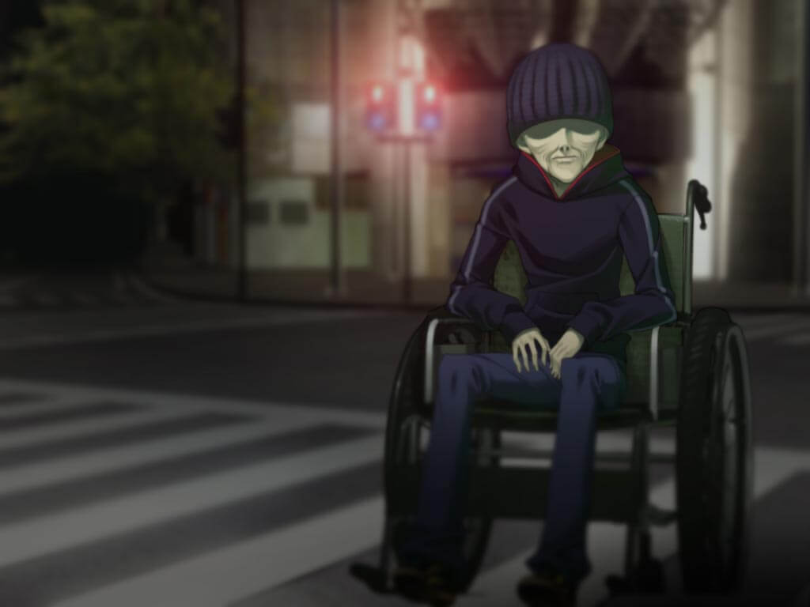
第4章 Di-Sword
这天早晨拓巳感觉不太好，因为他昨晚梦见了梨深，但梦中的感觉却是十分怀念而悲伤。拓巳到学校后，三住告诉他两名刑警曾来看过全校的学生名册，而梨深也很贴心地地向三住隐瞒了那天晚上在涩谷十字路口所发生的事。（妄想15：与梨深友好交谈增进好感；与梨深分道扬镳再无交集）正在这时，转学生折原梢进入了教室。三住说折原梢十分沉默寡言，而且动不动就开始哭鼻子。放学时拓巳骗妹妹七海拨打了那个不知名的电话，但却发现那是个空号。
放学后拓巳又在街上远远看到了扛着大剑乱逛的濑名，刚想赶紧离开，却发现地上有一条长长的白色锁链，但似乎所有人都没注意到它。好奇心驱使拓巳循着铁链来到了街上展览用的绿色电车皮，铁链就出自这里。拓巳向里一看，发现平时人满为患的车里空无一人，只有濑名坐在最里面，而铁链正盘在她的脚边。（妄想16：拓巳认为濑名不会/会加害自己）濑名瞬间消除了铁链，说那铁链只是她的妄想，还说拓巳也本应拥有一把“剑”。据她说，有一个研究团队开发了一种可以通过向人脑发送特殊的电信号，从而实现控制人的五感甚至思想、行为的VR技术。她提醒拓巳，他看到的世界有可能是虚假的。
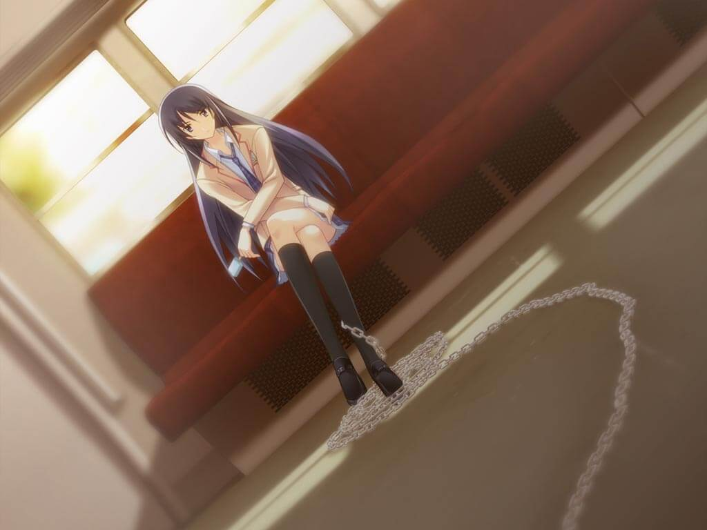
回家后，拓巳在网友Grim的帮助下，查到了濑名所说的技术专利是确有其事。专利书上说这是将拍摄的场景转换为人脑可以接受的电信号，从而帮助失明患者重见光明的技术。拓巳不由得担心起自己的所见所闻甚至是自己的言行都在受人操控。此时，拓巳又收到了楠优爱发来的邮件，上面说她还想再来找拓巳谈谈，拓巳当即决定这两天白天都先去网咖避避风头。
但仅仅隔了一天，优爱就找上了拓巳所在的包间，（妄想17：优爱的病娇告白；拓巳被优爱强行控制）告诉拓巳他其实患有多重人格，而她想帮助无法控制自己而四处杀人的拓巳。极度恐惧的拓巳推开优爱逃出了网咖，半路却遇到了疑似是在监视他的便衣警察。（妄想18：被警察盯上；被警察追捕）拓巳慌不择路地跑到了PHANTASM乐队的演出地。这时，主唱FES——也就是他同年级的同学岸本绫濑——出现，拉着他一起跑到了涩谷车站的地下通道中。（妄想19：绫濑的不同服装）
绫濑说由于传言她写的歌词与“新世代”事件之间有所关联，而正在被警方调查。听闻拓巳的境遇后，她却说拓巳所经历的一切痛苦都是必要的试炼，并告诉拓巳他买的那把Di-Sword只是个赝品。就在拓巳急切地询问她怎样拿到真正的Di-Sword时，绫濑当着他的面从虚空中拔出了之前拓巳在演唱会上看见过的那把剑。绫濑解释说这把剑来源于她的妄想。正在此时，绫濑身边竟然出现了一个身穿拓巳妄想中服装，动作与本体完全同步的绫濑！她说涩谷存在一种来自高次元的“伟大意志”。它引来了众多的年轻人，也促成了Di-Sword的出现。但绫濑无法帮助拓巳，只有靠他自己的力量才能找到属于他的Di-Sword。
与此同时，刑警判安二和助手诹访也发现了涩谷具有很高的重力异常值，也因此在某些地方时常会发生一些违背物理规律的“怪事”。他推测，所有“新世代”事件的发生地可能都具有重力异常现象。
回到家后，拓巳收到了Grim发过来的一段据说是“新世代”犯人拍摄的视频。录像上是第一起事件跳楼的五人。沉默不语的视频拍摄者将歇斯底里的他们一步步逼到楼顶边缘。终于，五人像死心了一样相互拉着手站起来，其中一人说道“那道视线，是谁的？”然后五人一同跳了下去。虽然拍摄者全程没有说话，但拓巳听到了细微的轮椅发出的喀吱声。而且极低的镜头拍摄角度也证明了，这一切事件的元凶都是那个晚上出现在拓巳面前的人——“将军”。
第5章 妄想
在第一起事件的视频中出现的那句话让所有人都明白了这所有的事件都是同一人所为。同时，警方调查发现最初上传那段视频的电脑正是拓巳每次去网咖上网最常用的37号包间电脑。
拓巳无法忍受独自一人时的孤独和恐惧再次来到了学校。他虽然已经不再怀疑梨深，但仍然对“十字架”现场看到的梨深心存不安，而且他并没有自己与梨深最初相识的记忆。放学时，（妄想20：捡到诡异的学生证；看到无人乘坐的轮椅）一整天都精神紧绷的拓巳已经濒临崩溃，向前来关心自己的梨深求助，梨深也再一次安慰了他，还答应自己会尽量多陪着拓巳。
回家的路上，拓巳对梨深道出了那天晚上自己所见的景象和“将军”，但梨深称她那天没有见到任何异常。（妄想21：诱惑的梨深；不识趣的梨深）回到拓巳的集装箱小屋后，拓巳将自己的PHANTASM乐队CD借给了很感兴趣的梨深，还告诉了梨深自己正在寻找真正的Di-Sword的事。这时拓巳想到，如果存在将电信号传入人类大脑从而使人类看到虚像的技术，那么如果可以将一个人的妄想转化为电信号再发送给附近的所有人，对于这个群体而言，这样的妄想就成为了现实。事实上他也确实找到了另一份专利，内容是从远处监测神经信号脉冲并将其转化为影像和声音的技术。这一技术甚至可以搭载到人造卫星上，也就是说理论上可以实现监控世界上任何一个人的思维。（妄想22：充满自信/没有自信地用假Di-Sword进行投影）（妄想23：只穿着衬衫和内衣的梨深；穿着便装的梨深）
正在梨深外出买饮料的时候，Grim告诉拓巳“新世代”的第五起事件“脑残男”发生了！受害者在大脑被摘除的状态下，最终却是死于器官衰竭。而让拓巳震惊的是，这名死者正是前段时间给他看过病的心理医生高科！
不过好在有梨深的陪伴，面对这次“将军”如此明显的挑衅，拓巳并没有像之前一样精神崩溃。第二天梨深也陪着拓巳一起上学放学，（妄想24：没有出现/出现了将军的踪迹）拓巳在路上把绫濑和她的Di-Sword的事，以及自己小时候可能靠妄想引发了车祸的事告诉了梨深，但梨深却对这一切保持怀疑。
另一方面，刑警判安二正私下里循着涩谷的引力异常为线索追查。他从一位相熟的情报贩子百濑手中获知，这一系列事件背后可能牵涉着隐藏在涩谷背后的多方势力。据一位大学教授公开的研究结果，半年前涩谷的引力异常开始突然急剧增加，而这似乎会对人类的生物节律产生重大影响，让人类产生幻觉甚至精神失常。而公布这一研究结果的太田教授，已经成为了“十字架”事件的受害者。据他们调查，这一系列“新世代”事件背后最强大的势力竟然是日本当前的执政党“明和党”。
好不容易独自挨过了两天周末，拓巳却发现PHANTASM乐队的论坛上竟然扒出了主唱FES——也就是岸本绫濑——曾经是重度精神病人，并在一家名叫ArcheartMedical会的精神病院接受过封闭式治疗的事实，但拓巳却对这样的她产生了共鸣。就在这时，拓巳的手机突然响了。拓巳随手接了电话放在耳边，传出的却是和上次一样的“请让过”的旋律！虽然他想直接挂掉电话，但一股莫名的力量却让他把手机贴向耳边。拓巳最终在巨大的蜂鸣声中失去了意识。
与此同时的学校里，学生们开始呕吐、晕倒，学校陷入了一片混乱。尚且正常的学生和老师们纷纷惊讶的看向了逐渐变成纯白的天空……
第6章 Noah
判安二正在警局开会时突然遇到了地震，但一阵剧烈的头痛却向他袭来，同事们一个接一个抱着头惨叫着倒下，窗外的天空也变得一片雪白。
涩谷站前的室外电视报道这是一次普通的5级地震，但伤亡人数却反常地在200人以上，大部分伤者都昏迷不醒。这让拓巳不由得想到了三个月前涩谷的3级地震，却造成了八人死亡的怪事。况且，全市的摄像机都捕捉到了与地震同时出现的那道雪白的强光，而且市内大部分的电磁存储介质全部损坏了。
拓巳在乱成一片的集装箱中醒来，头痛仍然剧烈。不幸的是，拓巳发现自己的电脑在地震中损坏了。好不容易重装好系统，“将军”却再次出现在了聊天室中！（妄想25：将军远程杀死了赶来的梨深；将军的噪声骚扰）但他只是说要送给拓巳一份礼物就离开了聊天室。
难以忍受这样的恐惧感，拓巳立刻离开集装箱小屋跑到了学校，但教学楼楼下却围着一群起哄的学生。而楼顶边缘却立着手握Di-Sword的绫濑。她像是在祈祷着什么，但却随即张开双臂从楼顶落下。无计可施的拓巳闭上了双眼，祈求着落点处能有柔软的花坛能救她。神奇的是绫濑本应摔落的停车场的沥青地面上确实凭空出现了一个花坛，减缓后的冲击让她并没有受到很严重的伤害，而那个花坛也没有像之前拓巳看到的绫濑分身那样消失不见，在场的所有人也没有对这一现象表现出任何疑问。这时，濑名赶来质问拓巳这一切是不是他的所作所为（妄想26：濑名的吻；拓巳以下克上），与一个叫天成神光会的组织是否有关，拓巳立刻否认。濑名相信了他，并解释道这是拓巳的妄想化为了现实，他不需要Di-Sword也能做到这一点。临走前她还再次嘱咐拓巳不要再制造“异常”，一旦看到了别的“异常”也要及时通知她。
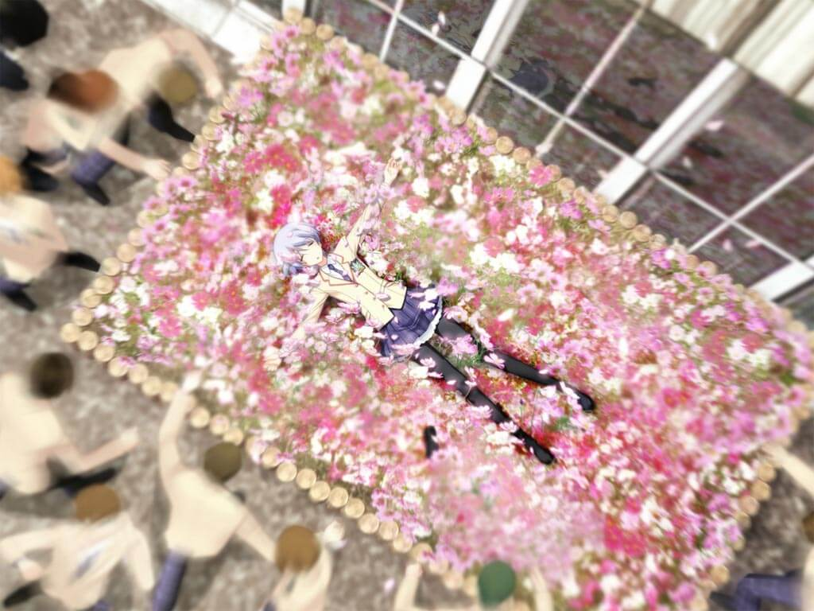
在感受到那谜一般的视线之后，叶月护士与诹访立即演了一出“诹访想看拓巳病历却被拒绝”的戏。被注视的感觉一消失，叶月就将拓巳的病历给了诹访。她知道拓巳的原型就在这所医院但至今仍未能找到他。诹访决定按计划将拓巳引到O-FRONT让他觉醒。
回到集装箱小屋后，拓巳仍然联系不上梨深。这时他发现收件箱里有一封发件人是七海，主题是“那道视线，是谁的？”的邮件。邮件的内容竟然是“将军”对拓巳的宣战，他说拓巳救下的绫濑本来是他决定的下个牺牲者，因此接下来他将会对拓巳的妹妹七海出手！他要求拓巳晚上21点去O-FRONT的楼顶，还询问拓巳有没有收到自己送去的礼物。惊慌的拓巳立刻打电话给七海，但一阵手机响铃却在这间小屋中响起！（妄想27：“将军”是奈奈的恶作剧；“将军”亲自接了电话）拓巳仔细找去，发现自己屋里不知什么时候多了一个封好的纸箱，而手机铃声就是从这个纸箱中传来的。
而纸箱里是一只用铝箔包裹起来的，沾满鲜血的手机！担心七海安危的拓巳立即打算冲向O-FRONT，然而他刚出门就看见浑身赤裸的七海趴在地上，全身冰凉。拓巳连忙将七海带入小屋，安顿妥当。但七海并不知道自己怎样来到这里的，她能想起来的只有拓巳之前送的手镯弄丢了。在七海的请求下，拓巳让七海睡在了自己屋里。
半夜，拓巳接到了七海的电话，电话里七海的声音竟然让拓巳把她的右手还给她。然而拓巳并未在意。然而次日早上，拓巳却注意到七海右手腕处包裹着昨晚并没有的白色绷带。联想到半夜的那个电话，拓巳让七海把绷带拆掉，她的手腕上却没有任何伤痕，但那绷带却臭味扑鼻。
拓巳在网上看到消息，“新世代”的第六起事件“SMJK”发生了，这次是一名男性死者，其口中和胃里被塞入了大量布条窒息而死，而那些布条恰好能拼出一件翠明学院的女子制服！拓巳立刻想到那很可能是七海的制服。
更让拓巳不安的是，回家取衣服的七海已经快一天了也还没有回来，并且拓巳又接到了一个七海的求救电话。直到天黑七海才回来，说是买制服花了很长时间。拓巳立刻将自己的所有遭遇都告诉了七海。陷入不安的两人决定晚上一起睡。
但第二天拓巳却在沙发上醒来，手机和电脑上显示的时间竟然已经是11月4号晚上8点！并且“新世代”事件报道里并没有“SMJK”，反而多了“美味的手”和“DQN拼图”两个事件！此外，邮箱里竟然充满了将军质问拓巳为何没有赴约，以及这一周以来为何没有任何联络的邮件。本该是七海睡着的床上与以前一样脏乱，房间里与七海生活过的痕迹消失得无影无踪。而就在此时，小屋的门被敲响了，那外面竟然是穿着血淋淋的制服，右手被砍断，左手抱着一把Di-Sword的七海，而拓巳身后竟又出现了那个昨晚与他一起睡觉的七海！两个七海都说对方是假的，但断手的七海挥出的Di-Sword却径直穿过了完好的七海。拓巳向她伸出手去，竟然也穿过了她的身体！她的全身上下，只有她的“右手”，能扎扎实实地被拓巳所触碰。这时，拿着Di-Sword的梨深从门口出现了，她说这个完好的七海是拓巳看到七海被切断的手腕，由于接受不了现实而通过妄想创造出的四肢健全的“幻影”，是使用妄想创造人类的禁忌行为。使用如此强大力量的副作用就是这一周内拓巳都陷入了昏睡，所以才会有醒来时的时间落差。正在拓巳陷入混乱之时，大地震颤世界染白——ThirdMelt开始了，而拓巳也同时决定，自己只需要一个能和七海两人一同相处的世界就好了。
第二天醒来时，拓巳正与七海一同睡在床上，两人终于互相确认了对方的心意，开心地生活在了一起。
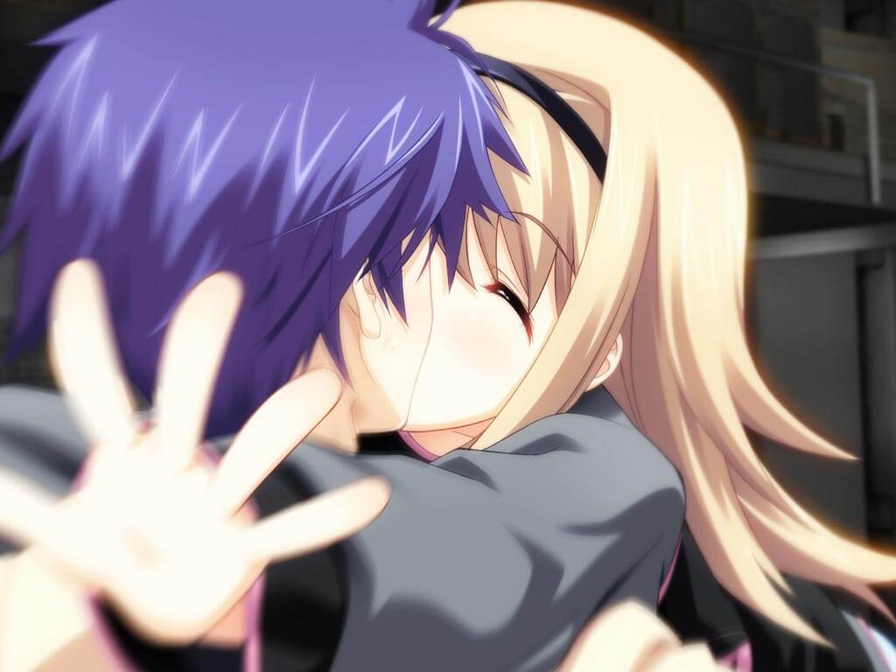
——西条七海结局：daydream
这个纸箱很重，里面塞满了缓冲材料和一块用铝箔包装起来的物体，那里面竟然是一只握着手机的，从手腕处被砍断的血淋淋的人手，而那只断手上还戴着之前拓巳送给七海的那个劣质的手镯！
临近“将军”指定的时间，拓巳带上星来的手办前往O-FRONT购物中心。楼顶上“将军”摇着轮椅出现了，但他说话的声音却有些奇怪。“将军”坚称拓巳拥有能将妄想化为现实的能力，并要求他完成任务才会将七海还给他，否则就杀了七海。拓巳按“将军”的要求将身子探出楼顶边缘的广告板，向下面的十字路口挥手致意。而此时拓巳发现，十字路口前的巨幅户外电视竟然在实时直播着他的一举一动，旁边的字幕还写着“超能力少年的现场演出”字样，下面围观的人群也在一起跟着起哄。（妄想28：围观的人群凌辱梨深；拓巳跳楼自杀）然而“将军”的下一个指示却是让拓巳在这里找到Di-Sword！确实，对面一栋楼上的纹路很像一把剑，但无论拓巳怎么伸手都握不住那个轮廓。（妄想29：星来诱惑拓巳利用七海之死；星来说服拓巳见死不救）情绪终于爆发的拓巳向阴影中的“将军”冲了过去，但轮椅上却空空如也，只有一个暗黑绝地武士的头盔和一件黑风帽。还没等拓巳来得及考虑这一切，一大群扛着长枪短炮的记者就冲上了楼顶围住了他。精疲力竭的拓巳在这社恐噩梦中失去了意识。
诺亚II可以通过干涉脑神经细胞之间的信号传递使人看到幻觉，同时高引力异常会使人的生物节律高昂（情绪亢奋），从而对广播的神经脉冲信号更加敏感，将虚拟影像判断为现实。这一点与Giga-Lo-Maniac相比具有同等甚至更为出色的表现。此外，诺亚II的生效范围也可以通过设置便携性的诺亚II终端加以控制。
第7章 Psychopath
由于有人报警说一名女高中生在地铁站持刃具袭击行人，判安二调取了当时的监控查看。那名被袭击的男性背后背着一个硕大的背包，让判安二感觉很熟悉，因为最近大多数袭击报案的受害者都是背着类似大包的人。先是有几名行人呆呆站在那男性身边，但那名女高中生赶来揪住他时，那些行人都如梦初醒一般走掉了。更不可思议的是，在监控画面一阵猛烈摇晃之后，那名少女不知从哪里抽出了一把比她自己还长的大剑，劈开了男子背后的背包。之后，少女突然转头看向摄像头的方向，画面突然一阵扭曲，少女消失不见了。
梨深无法挤进十字路口中的人潮接近拓巳，但却听到了“将军”请她帮忙取回七海的手腕的声音。她从拓巳的集装箱小屋里取走了装着断手的纸箱，来到了“将军”所在的病房。“将军”一如既往地坐在轮椅上，脸庞如老人一般干瘦且布满皱纹，干瘪的身躯也萎缩得像小孩子一般。“将军”认为七海暂时还没有生命危险，只是先将七海的断手冷藏了起来。他告诉梨深，拓巳当前已经被送到了这家医院的精神科。
拓巳梦到了从前。巴士事件导致拓巳变得自闭，比起忙碌且过保护的双亲，平时一直都是妹妹七海照顾着拓巳的生活起居。拓巳醒来时发现自己在医院的病房，身边的护士正是上次来精神科看病时的叶月小姐。（妄想30：拓巳发现这一个月都在梦中；警方确认是拓巳杀死了七海）正在拓巳对自己没能救出七海而追悔莫及之时，叶月提到昨天七海和他母亲来看望了拓巳，而且七海看上去并未受伤。拓巳终于放下了心。
在警局会议中，判安二发现在犯人公布的“集体跳楼”事件的视频中，摄像机朝向东边时并没有将一幢很显眼的大厦拍进去，而这幢大厦早在2003年就已经建成了。但判的上司却将这一发现当成了无稽之谈。
拓巳从医院偷溜回了忘记上锁的集装箱小屋，但发现七海的断手已经不见了。根据网上的报道，昨天拓巳以超能力少年N的身份给媒体发去了邮件，说自己会在涩谷站前用超能力侦破“新世代”事件的凶手，还受到了“超能力搜查官”尤里·布莱曼担保，但现在所有人都认为这只是个恶作剧或是炒作行为，论坛上甚至把拓巳的真实身份都扒了出来。拓巳没有发现当时的楼顶有他人在场的消息，更不用说“将军”了。
10月28日，“新世代”第六起事件“美味的手”发生了。这次是一名死于呼吸道堵塞的27岁女性，她被切下了右手，在胃里发现了人肉的消化物，脚踝处还有捆绑的痕迹。 同时，自从那次5级地震发生以后，涩谷的寻衅斗殴、打砸偷盗等事件大幅增加，治安明显恶化，还发生了示威者冲击警察局的事件。拓巳认为这是“将军”给他的暗示。
在上次的超能力者炒作事件发生后，拓巳就收到了学校的停学通知，拓巳也尽量不离开集装箱小屋，等待这件事被淡忘。但拓巳心中还是想去学校，因为从那以来他一直没有与梨深见面，也鼓不起勇气主动联系梨深。
一周以后，拓巳鼓起勇气去了学校，但果然还是遭到了同学们的嘲笑，就连三住也装作不认识他，他也意外地没有找到梨深的身影，甚至开始再次怀疑起了梨深存在的真实性。（妄想31：凌辱折原梢；杀死嘲笑他的同学）但当拓巳准备按自己的妄想实施时，却在脑内听见了一个鼓励他的女声，周围也没有人对他说话，拓巳觉得自己是彻底疯了。
判安二再次找到他相熟的情报贩子百濑，她说她发现涩谷的引力异常值的变化很像受到了人为操纵：不但每逢周末就上升，而且每到日本法定假日变化就会突然停止。而且，在最近两次死伤重大的小地震时期，引力异常值达到了近十年来的峰值。联系到地震当天的电磁波暴和天空变白的传言，这两起地震很有可能是人为制造的，但新闻媒体却被明和党压了下去。然而她的调查并没有发现与明和党相关的企业团体有什么异常。
“将军”的病房里，梨深含泪向“将军”提议让她去杀死拓巳，但“将军”不同意，他说还有非拓巳不可才能完成的事。
拓巳一直等到放学也没有见到梨深，那个脑内的女声也没有再出现。在回家的路上，拓巳被三个受人指使的混混找茬，但在被殴打时极度愤怒生成的妄想下，三个混混开始自相残杀。转学生折原梢唤醒了晕倒了拓巳并带他离开。（妄想32：与梢的心声脑内交流；怀疑是“将军”的精神攻击而陷入恐慌）梢通过心声让拓巳相信了自己，还说自己从小就无法屏蔽读取他人思维，也因此很容易伤害到别人，所以一直向他人隐瞒着这个能力。谈话间梢提到了同班同学梨深在地震那天就一直没有来过学校。虽然拓巳放下心来梨深并不是自己的妄想，但他还是在意梨深至今为止一次也没联系过他。两人在谈到那天“超能力直播”的事时，梢说她也有Di-Sword，并拔出来给拓巳看。（妄想33：梢是拓巳的女仆机器人；拓巳被梢腰斩）但拓巳还是觉得梢不带恶意地说着通过杀人来报复坏人有点太不正常了，而且据梢说她是在很希望杀死某人的时候就能很轻松地从视野中找出Di-Sword。对现在的她来说，这把剑就是保护自己的另一个自己。
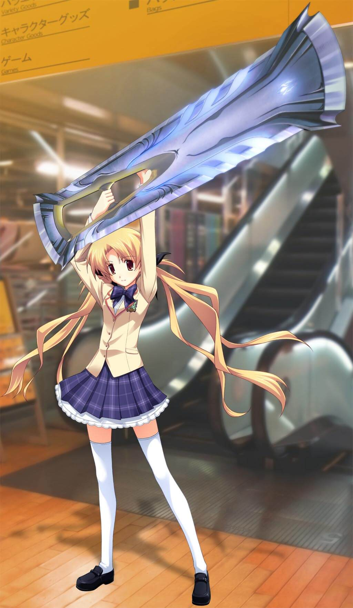
梢从小就拥有能听见他人思维的能力，但她一直隐藏得很好。然而，当她上了高中后经常被女同学们用镜子反射光照她的眼睛还暗中嘲笑她，后来甚至让她产生了幻听，感觉身边的每个人都在拿着镜子对自己窃窃私语。终于有一天她崩溃了，抽出Di-Sword砍断了三个欺负她的女生的手腕，她也因此转学到了涩谷。而她到涩谷之后也没有立刻去上学，终日在涩谷市区徘徊。一天她遇到了一名声称世界将会毁灭的流浪汉，并且他既没有对心声表现出惊讶也知道梢拥有Di-Sword。梢在看见他的时候就对他有很强的杀意，但那个男人忏悔一般的告白却让梢相信了她与剑是一体同心，也消解了她内心的杀意。在她离开时那男人说，在所有像她一样的人中最特别的一个，是创造了“那道目光，是谁的？”的少年。
拓巳哑然，他觉得就算能再找到那个大叔也是无济于事，并且听了梢的故事后他连梢也开始有所怀疑。正在此时梢远远看到了地把濑名招呼了过来，她说濑名是她来涩谷后的第一个朋友。濑名将拓巳称为Giga-Lo-Maniac，即能干涉狄拉克之海的人，而由暗物质构成的Di-Sword正是连接迪拉克之海的通道。Giga-Lo-Maniac通过Di-Sword创造出正粒子再发送到其他人的盲点中转换为电信号，就可以使妄想成为“现实”；发送反粒子即可以使创造出的“现实”湮灭。简单来说，只要让所有人的大脑使他们都能感知到自己用Di-Sword创造出的正粒子形成的“现实”，而成为群体性的“共同现实”，也就等同于真正创造出了现实，梢向别人发送心声的原理也是一样。所以，Di-Sword在没有形成“共同现实”之前对普通人来说并不存在也无法用它来杀人。濑名也说Di-Sword在生物节律上升也就是情绪发生重大波动时更容易出现。（妄想34：濑名喜欢吃棒冰的原因；写有“那道视线，是谁的”的棒冰木棍）
濑名再次要求拓巳不要制造异常，因为在生成正粒子时Di-Sword中会积聚反粒子，积聚得越多，Giga-Lo-Maniac越容易偏离现实世界，最终会导致自身存在的崩溃，尤其是无需Di-Sword就可以完成妄想具现化的拓巳。并且，能成为Giga-Lo-Maniac的人都至少经历过一次精神崩溃。拓巳问起梢的心声能力，濑名说Giga-Lo-Maniac都可以“看”到周围的人的妄想，只不过她的能力特别强，以至于无法拒绝“看”到别人的妄想。
次日虽然不是拓巳规划的上学日，但他为了见梨深还是来到了学校。而今天，梨深来上学了，还和往常一样和拓巳打招呼，三住也主动与拓巳和好了。不仅如此，他还见到了这几天他一直躲着的七海，但让拓巳毛骨悚然的是，七海的右手手腕上竟缠绕着绷带！
第8章 Ir2
判安二与楠优爱约了一次会面。经判安二的调查，优爱的双胞胎妹妹美爱正是第一起“集体跳楼”事件的受害者之一，而且在美爱死后，她的家人都只是接受了这一事实，并没有提出任何异议。而事实上，美爱从小就在为姐姐优爱着想，故意做出讨人厌的言行，将父母的宠爱都让给了优爱。在美爱死后，她的父母就打算忘记她的存在，甚至对外宣称他们只有优爱一个孩子。也因此优爱为了妹妹离奇的死一直在独自调查。她在妹妹的日记本中看到了满篇的“那道视线，是谁的？”的字样，并以此在网上搜索出了西条拓巳五年级时写的那篇同名的获奖作文。看完优爱对拓巳的调查报告后，判安二说警方并不认为拓巳是嫌疑犯之一，至少在“十字架”案件中拓巳的指纹与十字锥上的指纹不一致。判又向优爱问起濑名凭空变出剑的事，优爱说她曾看到拓巳和绫濑在地下通道里凭空变出剑的场景，而且还亲眼目睹了有两个绫濑。三人闲聊时优爱提到了每周五会发售新款呕吐蛙的事，而判立刻联想到了周末引力异常值上升的发现。他认为这是一个调查的切入点。
正在这时，诹访突然打来电话，说“新世代”的第七起事件发生了！这次有三名死者，他们都被腰斩，并且在交换下半身后被凶手用钓鱼线缝合了起来吊在铁柱上，每个人的前额还都被刻下了“D”，“Q”，“N”形状的伤痕。更离奇的是经司法解剖发现，他们的身体居然是被某种力量生生“扯断的”！
优爱出来以后遇到了诹访，诹访告诉她集体跳楼事件现场发现了一个暗黑绝地武士的头盔，而且还提到西条拓巳也有一个这样的头盔。这让优爱再次坚信拓巳的“将军”人格就是杀死自己妹妹的凶手。她闯入拓巳的集装箱小屋，把他绑了起来监视着他。
另一边，判警官从集体自杀事件中查到了疑点，因为集体自杀现场发现了“美爱”的遗物：眼镜 ，但事实上美爱是不戴眼镜的，她的姐姐优爱才戴眼镜。而且姐姐优爱热衷社交，妹妹美爱性格内向且喜欢动画。事件发生前，有目击者称一对双胞胎姐妹一起进入了卫生间，很长时间都没出来。
集装箱小屋中，优爱还将美爱的日记拿给拓巳看以逼迫“将军”人格现身。然而，拓巳发现那本日记封面上赫然写着优爱的名字！无论拓巳怎样指出，优爱都坚信这是美爱的日记，还脱下衣服展示美爱身上有但自己身上没有的痣。然而事实上，那颗痣的的确确长在她自己身上。陷入混乱的优爱翻出了自己的美爱的照片，指向了自己——但她分明指向的是那个没有戴眼镜的少女！正在这时，尖锐的蜂鸣声传来，大地震颤天空染白，拓巳和优爱都昏了过去。
美爱想起了一切。事件发生傍晚，由于美爱打算与网友见面但自己认生，遂拜托姐姐优爱和自己交换身份与网友见面。在优爱的要求下两人甚至交换了服装。但美爱终究没能再见上自己最爱的姐姐一面。心中害死姐姐的痛苦让她扮演起了姐姐的角色。一直以来讨厌美爱喜欢优爱的父母也将错就错，配合着将她当成优爱对待——他们内心大概也希望死的是美爱吧。
在美爱要求下，拓巳与美爱再次来到了那起事件的大楼楼顶，她想跳楼以死赎罪，但最终还是退缩了，并在拓巳的劝说下决定重新以美爱的身份活下去。
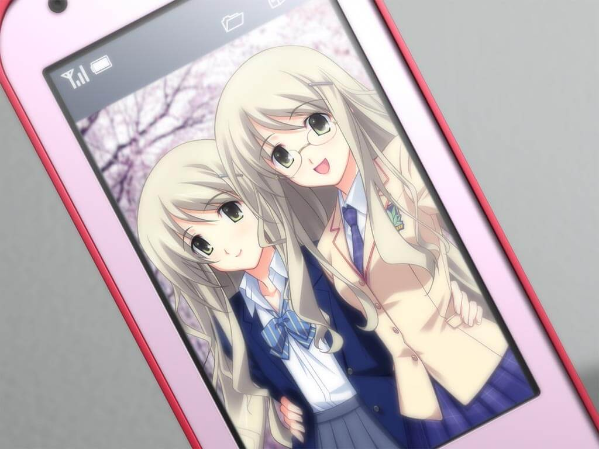
——楠优爱结局：月与太阳
放学时梨深向拓巳道歉，说之前没有联系拓巳是因为她的一个朋友在地震中受了伤。但拓巳还想着心七海手腕上缠着绷带的事，而且并没有把这一发现告诉梨深。两人回到集装箱小屋后，（妄想35：梨深抱住了拓巳；病娇梨深割腕自杀）Grim告诉拓巳“新世代”第七起事件“DQN拼图”发生了（DQN：缺乏常识的人）。拓巳看照片发现，这三个人竟然是那天对拓巳找碴并殴打了他的混混！
拓巳认为梨深失联的现在，濑名也许有能力保护自己，于是他来到街上的电车皮向濑名求助。濑名告诉拓巳，对他进行思维盗摄的“将军”很有可能是希科技的手下，他们想通过诺亚计划掌控世界。但让拓巳意想不到的是，濑名当即决定让拓巳跟自己一起闯入希科技总部，借此诱出“将军”。两人在濑名的能力作用下进入了希科技大厦，但半途中拓巳却在不明信号的影响下看到了右手被砍断的七海被禁锢在某处的影像。拓巳不顾濑名的劝阻冲进了顶层的社长室，却中了希科技的圈套，和濑名两人被关在了房间里。大屏幕上出现了猪鼻议员和天成神光会教祖仓持的影像，他们说诺亚计划正是他们瞒着300人委员会暗中实施的企图控制世界的计划。濑名解释道诺亚计划其实是大规模的思想控制装置开发计划，最初打算人工生产Giga-Lo-Maniacs，后来演变为制造可实现思维盗摄，视觉投影以及五感控制等类似功能的装置——诺亚II。
被困28小时后，在突如其来的地震和耳鸣声中，拓巳昏迷了过去。当他醒来时发现自己和濑名被压在了一片废墟之中。突然，不远处传来了三个男人对话的声音。他们谈到这次第三次启动试验ThirdMelt已经标志着诺亚II通过了最终启动测试。这时，濑名的父亲——那个梢曾经提过的流浪汉——波多野一成将两人从废墟中挖了出来，与此同时，扬声器里另两人的说话声在枪声和惨叫声过后也戛然而止。但这时拓巳却发现角落破损的显示器上却有自称是300人委员会的联络消息，还准确地道出了他们在场三人的名字。对方称为了让他们的计划破产，他们杀掉了猪鼻议员和仓持教祖，还说真正的300人委员会是不存在于这个世界上的，他们就像这个世界的超级管理员，只负责消除错误，构筑秩序。他们说自己无法亲自介入这个世界，只能请求Giga-Lo-Maniac破坏掉影响世界平衡的诺亚II，并表示会给予他们能获得强大力量的“作弊码”，还承诺濑名任务完成后会复活她的母亲和妹妹。但一成却对“管理员”的这一说法表示了怀疑。不过濑名心意已决，丢下了父亲一成，和拓巳去指定的地点获取“作弊码”。心存疑虑的一成选择留下来继续与300人委员会对话，但最终却得知300人委员会打算将知道真相的他们尽数抹杀。随着希科技大厦的彻底崩塌，他再也没有机会将这一消息警告给濑名了。
两人找到了那所谓的“作弊码”，但发现那只是一个襁褓中的婴儿。拓巳打算杀掉婴儿获取“作弊码”，但濑名表示无法下手。僵持中，诹访现身用手枪击中了那个婴儿，然后将枪口对准了濑名。拓巳冲上去给濑名挡枪而身受重伤。正当诹访准备补枪时，梨深出现救下了两人，鼓励他们去破坏诺亚II。
地面上是一个数年前就应该被拆除，现在却毫发无伤的天文馆。失血过多的拓巳在发现濑名怀中的婴儿已死之后，抽出了属于自己的Di-Sword，向天文馆穹顶劈去，却被一道看不见的障碍阻隔。四周天成神光会的信徒开始用枪对他们扫射，濑名不顾弹雨，冲上前与拓巳一起合力摧毁了诺亚II。
诺亚II和野吕濑玄一被摧毁，异常全部消失，西条的原型“将军”奄奄一息，复制品拓巳和濑名完成任务后也一同死去，但梨深却逃掉了。300人委员会将会对人类牧场计划进行修正，世界也重回“正轨”。不过不知为何，那个婴儿却活了下来。带走他的委员会“监视者”打算在这涩谷把他抚养长大。

——苍井濑名结局：Deus ex machina（译：机械降神）
拓巳认为梨深失联的现在，梢也许有能力保护自己。虽然梢没有完全答应下来，但两人还是成为了朋友。不过，拓巳偶然发现梢似乎很害怕镜子。在回家的途中，拓巳感到周围的每个人都在用手机偷拍他，甚至还听到了“将军”的轮椅声。更可怕的是即使他回到了集装箱小屋里，快门声和轮椅声依旧在屋外环绕。拓巳认为这一切都是自己神经过敏的幻觉，但当他登陆论坛时，发现论坛都被他的行踪，以及集装箱小屋的照片刷屏了，最近的一条甚至是几分钟前刚刚更新的！
次日，梢被全班的女生叫到了楼顶进行霸凌，过程中一阵奇怪的声音响起，所有在场的女生竟同时掏出了镜子照向了梢。受到刺激的梢开始狂暴起来，无意识地投影出了Di-Sword杀了在场的所有人。与此同时，拓巳在轮椅和快门声中赶到了学校，想要寻求梢的庇护，最终循着梢心中的求救声找到了浑身浴血，软弱地哭泣着的她。拓巳从闪回的妄想中看到了梢在楼顶的杀人现场，难以抑制的恶心和恐惧让他逃跑了。在楼梯口，拓巳遇到了许久未见的梨深。虽然稍微安心了下来，但他不禁有些怀疑梨深出现的时机。果然，就在他们一同下楼时，梨深竟抽出了她的Di-Sword想要杀掉拓巳！悲愤的拓巳甚至对梨深起了杀心。几乎同时，听见了拓巳心声的梢手持Di-Sword突入现场，击杀了梨深。走投无路的拓巳选择了依靠梢，同时梢也不再压抑自己的负面情感，决定要将所有欺负两人的坏人都杀掉。
听到楼顶传来了尖叫声，拓巳准备先带着梢在学校里藏一下，但围观者的拍照和手镜光激怒了梢，她流利地抽出Di-Sword杀死了那些学生。但拓巳在她屠杀的过程中，却感受到了梢对于自己本性的怀疑与矛盾，就如同双重人格，她自身并不想杀人，但另一个人格却引导着她的身体进行屠杀。
在楼道上遇到三住和另几个混混时，拓巳和梢本想放过他们，但他们却提到了一个暗黑绝地武士把断了一只右手的七海带给他们糟蹋的事。暴怒的拓巳掏出刀捅死了那个混混，还让梢把在场的其他几人连同三住一起杀了。
而校外，诹访正同另几个身背登山包的男人观望着学校里暴戾的一切，等待着回收拓巳的代码样本。因为这所学校，正是希集团为了方便收集Giga-Lo-Maniac而建造的。
在学校后院，两人遇到了濑名，濑名说这一切都是由于诺亚II的精神攻击所致。她对两人没有表现出敌意，反而警告梢控制妄想，否则大量积聚的负粒子会将梢的存在彻底抹消。然而，被负之妄想过度侵蚀的梢，突然开始不受控制地挥动Di-Sword攻击濑名！虽然濑名的战斗技巧相当高超甚至一度控制住了梢，但梢的身体却以近乎自残的形式摆脱了控制，杀死了濑名。
这时，戴着暗黑绝地武士头盔的诹访出现在两人面前。诹访虽然用手枪击中了两人，但梢的杀戮意志却让她的Di-Sowrd精准地杀死了诹访。已经濒死的两人手拉着手躺在鲜花盛开的花坛里，望着渐渐被乳白色所覆盖的天空，去往了另一个没有杀戮没有痛苦的，五彩斑斓的世界。
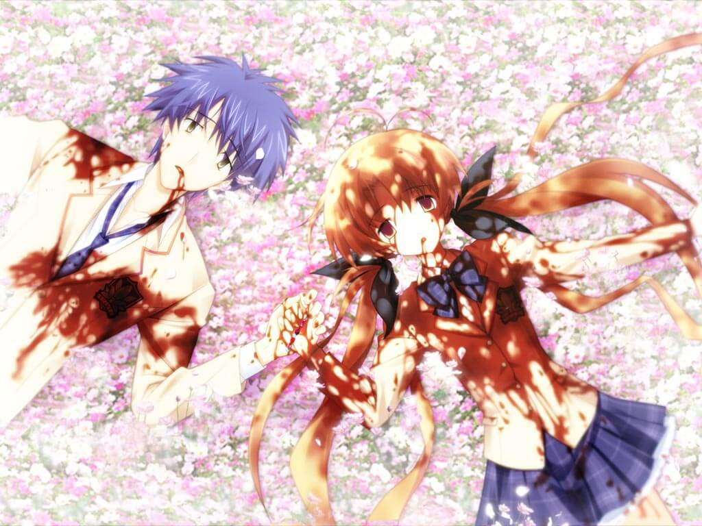
——折原梢结局：发展至杀戮之病
在医院住院的绫濑又开始了持续的头痛，这让她回忆起了两年前被关在封闭式精神病院——ArcheartMedical会——期间，被强迫摧毁精神时的恐怖经历。这时之前曾调查过绫濑犯罪嫌疑的诹访来了，他就绫濑的自杀行为、PHANTASM的预言歌词以及翠明学生所使用的“能力”询问绫濑，不过绫濑关于邪心王古拉吉欧鲁的中二回答还是让诹访摸不着头脑。
拓巳翻出自己小时候写的题为“那道视线，是谁的？”的作文。在作文背面，他看到了一个熟悉的符号：Ir2，这正是他首次与“将军”聊天时“将军”发来的公式中的一部分。
这天拓巳和三住相约去医院探望绫濑，但房间里的绫濑却浑身染血，窗边除了她自己的，还放着另两把拓巳从未见过的Di-Sword。三住被吓跑了。绫濑说在邪心王古拉吉欧鲁的精神侵蚀下，其他黑骑士已经靠不住了，现在需要她和拓巳两人赶快集齐剩余的四把Di-Sword，否则邪心王一旦觉醒，世界将会毁灭。但拓巳翻开绫濑常看的“古拉吉欧鲁启示录”却发现，这本书分明是空白的。拓巳认为绫濑的这套理论都是她的妄想。
当晚，拓巳在绫濑的要求下住在了绫濑的病房里。在护士巡查时他俩躲了起来，但那护士竟打算对绫濑下手，还在电话中对另一个人说接下来要去涉谷十字路口。护士离开没多久，某处就传来一声枪声。绫濑说那是一位黑骑士被杀了，她要拓巳同她一起去回收Di-Sword。
两人登上医院楼顶，果然发现了一把Di-Sword，而旁边倒着优爱和刑警判安二。判安二身下满是鲜血，优爱还活着，但绫濑说她的心已经死了，随后就收下了那把Di-Sword。正在这时，天空开始被纯白所浸染，大地也开始颤抖。绫濑说这是古拉吉欧鲁开始觉醒的征兆。在尖锐的耳鸣声中，拓巳昏了过去。
拓巳醒来后，两人一同在废墟和尸体中走到了神泉车站，濑名和梢一动不动地坐在地上。她们还活着，但心灵也同样被击溃了。拓巳在同步的妄想中，看到濑名和梢正处在精神崩溃的疯狂之中。绫濑用她的Di-Sword回收了两人的Di-Sword。一直对绫濑抱有怀疑的拓巳质问是不是绫濑的妄想造成了这一切，但就在这时，绫濑所看到的世界在拓巳脑中同步了。这个世界的天空是不祥的赤红色，周围的一切物品都显得破败而锈蚀。就连在正常世界相亲相爱的人们，在绫濑的世界里都飘散着黑色的雾气，毫无理由地互相残杀。而绫濑自出生以来就只能看到这个充满了人类消极妄想的扭曲世界。而她要打倒古拉吉欧鲁的目的就是为了从这个异常的世界中逃出去。消极的拓巳表示自己无法拯救绫濑，但绫濑说她已经被古拉吉欧鲁侵蚀了，甚至在她的妄想世界中，她开始不受控制地攻击拓巳。拓巳听从了绫濑的请求成功地拔出了她体内实体化的黑色雾气，而它们化为了属于拓巳自己的Di-Sword。但这时古拉吉欧鲁开始吞噬这个世界，天空开始变黑，黑色的雾气在世界里蔓延，腐化溶解接触到的一切。绫濑虽然知道集齐七把Di-Sword邪心王就会降临的预言，但此时却不知该如何下手。这时拓巳突然想起了绫濑写的歌。在绫濑的歌声中，七把Di-Sword融为一体，被绫濑掷向天空，粉碎了这个扭曲而异常的世界。被解放绫濑也终于能和拓巳一同，在蔚蓝色的天空下一起生活，一同欢笑了。
——岸本绫濑结局：给予罪过契约之血
这天拓巳、三住和梨深相约去医院探望绫濑。梨深说要去洗手间暂时离开，拓巳和三住找到了绫濑的病房。她人不在，（妄想36：拓巳偷看床上的内衣；绫濑跳楼自杀）但她的Di-Sword却随意地斜靠在窗边，拓巳虽然能看到，但却碰不到未具现化的剑。由于梨深和绫濑都久而未归，两人决定分头去寻找。然而，当拓巳走过一个转角时，那前方的走廊却被一层纯黑的“幕布”所切断，空间仿佛被一分为二，并且那股莫名的“神的视线”突然强烈地聚焦在拓巳所颈。巨大的恐惧让拓巳立即撒腿就跑。在护士站，他看到了熟悉的护士叶月小姐离开护士站跑向病房，而被她丢在一边的笔记本上的每一页，都赫然画着潦草的“十字架”案发现场的简笔画！而最后一页上写着“那道视线，是谁的？”。
拓巳跑到楼道，看见了窗边的三住，原来梨深和绫濑正在楼下神情严肃地谈话，绫濑还突然给了梨深一耳光。两人回到绫濑的病房前正好遇到回来的绫濑，她说拓巳是打倒魔王古拉吉欧鲁的七骑士中的一员，在跨越痛苦的试炼之后一定会获得Di-Sword。拓巳想起之前在网上看到过Di-Sword确实是在古拉吉欧鲁传说中出现过的剑。（妄想37：绫濑舔拓巳的手；绫濑让拓巳杀死三住却被三住反杀）不过对这些中二话题不感兴趣的拓巳无视了绫濑关于古拉吉欧鲁灭世的警告。两人离开时，在楼下看到了依然满脸笑容的梨深，拓巳还想隐瞒，但三住直接将两人看见绫濑打了梨深说了出来，不过梨深找了个借口敷衍了过去。（妄想38：梨深与绫濑的修罗场；梨深确信绫濑就是凶手，拓巳被绫濑所杀）三人走过医院大厅时，碰巧看到新闻正在报道警方已经逮捕了“十字架”事件的杀人凶手。但虽然嫌疑犯承认了自己掐死并钉住了太田教授，但其供词和动机却与事实有不协调之处。虽然心中仍有些不安，但拓巳终于对自己精神状态放下了心。这时，拓巳的手机接到了一个未知来电，但电话里竟是七海痛苦地说着“把右手还给我！”就挂断了。
判安二和优爱来到一家呕吐蛙专卖店买了一个新款的呕吐蛙，店员说每周的五六日三天，排队的人能挤满整条大街。两人离开时看到运送呕吐蛙的货箱上写着呕吐蛙的生产商——神光有限公司。
拓巳和梨深回到集装箱时（妄想39：一切都是七海的恶作剧；梨深强硬阻止拓巳回老家），却发现濑名手持Di-Sword立在集装箱顶，拿着拓巳小时候的作文纸质问他上面的“Ir2”是不是他所写，旁边是用心声让拓巳快跑的梢。还没等拓巳做出反应，濑名就举剑向他袭来，而梨深竟然飞身挡在了两人之间，具现化了她自己的Di-Sword！面对濑名的质问，梨深似乎早就知道拓巳创造了Ir2，并且知道拓巳如果觉醒将会发生大事。她说她并不打算杀死拓巳，但濑名向她冲了过来，用战斗技巧绕开她直取拓巳。
梨深在与濑名的战斗中发觉濑名并没有掌握Di-Sword的真正用途。梨深利用濑名记忆中的弱点制作出妄想并强制送入濑名的意识，让她无法战斗。但一旁的梢却把对濑名表现出敌意的梨深和拓巳视为敌人，攻了过来。虽然梨深用同样的方法给梢灌输了弱点，但这却让梢更加疯狂，用Di-Sword砸向拓巳。更糟糕的是，深受打击的濑名径直走到了楼顶边缘跳了下去！为了保护拓巳，梨深下意识地用Di-Sword刺向了梢。虽然并非她本意，但梢还是死了。
拓巳安顿好因杀人带来的精神打击而昏迷的梨深后，却发现梢和濑名的尸体都不见了，但血迹还在。而梨深醒来后不仅失忆了，还发生了退行，甚至想不起来自己的名字。正在拓巳费尽心思照顾梨深时，邮箱里出现了将军发来催促他觉醒的邮件，音箱里也传来了将军的声音！正在这时，刺耳的尖啸响起，大地开始震颤，世界化为乳白……ThirdMelt——“诺亚II”的第三次启动，提前开始了。
拓巳看到了梨深的过去。自从她的父母死于一场车祸，并且被AH综合医院发现她看到了“剑”之后，医院的赞助人野吕濑就对外宣称梨深已死，并将她关在地下室进行惨无人道的Giga-Lo-Maniac觉醒试验。3年间，他梨深身上试验了各种灭绝人性的刑罚和手术，梨深也被迫习惯通过杀死旧人格创造新人格的方式来抵抗精神崩溃。拓巳用自己的妄想之力唤醒了那些被梨深自己埋葬的人格。众人格合而为一，“完整的”梨深终于再次回到了现实。
拓巳睡着后，梨深面对出现的“将军”，表示要自己独自破坏已经启动的“诺亚II”并拯救七海和他。她来到涩谷站前本应早就被拆除，但大家都对它视而不见的天文馆旧址，但她根本不是强大的野吕濑的对手。她设法将七海安全送走，但自己却重伤濒死。但就在野吕濑对梨深施放他的妄想时，真正的“西条拓巳”——也就是“将军”用他的力量挡下了野吕濑的妄想，并利用妄想产生的反粒子阻挡住了野吕濑的视野。梨深趁机杀死了野吕濑，但重伤的身体还来不及破坏“诺亚II”，就已经香消玉殒。
拓巳醒来已经是第二天。“将军”出现在他面前告诉他已经也快要死了，梨深杀死了罪魁祸首，濑名和梢的尸体也是他藏匿起来的，七海也在医院得到了救治，但梨深再也无法回来了。但拓巳不相信，他决定这次一定要找到梨深，然后与她一同回到她所渴望的日常生活。
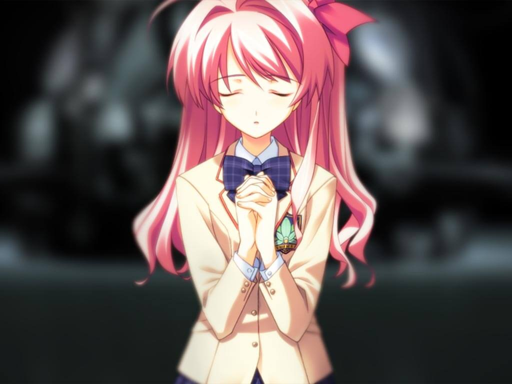
——咲畑梨深结局：Mania之像
就在这时，楼顶边缘出现了一个衣衫褴褛的流浪汉叫住了濑名，这立刻转移了濑名的仇恨，用Di-Sword刺穿了他的胸膛。原来这个男人正是濑名的父亲，但他曾抛弃了整个家庭，还将濑名的母亲选为了实验祭品。濑名一直在涩谷寻找他，想要杀死他为母亲报仇。然而，这一切只不过是梨深对濑名的妄想攻击。就在濑名即将从楼顶边缘坠落下去时，梨深拉住了她。崩溃的濑名说她家庭的一切悲剧都是拓巳的错，他创造的那个公式有可能会毁灭世界，涩谷现在的混乱也都是因那个公式而生。梨深没有反驳，只是说现在的拓巳对这些一无所知。
fun10 * int40 = Ir2这个公式是一个可能给世界带来灾难而被隐藏的千年数学难题之一，它用以描述基本相互作用中电磁力的共鸣现象，利用它就可以操控特定电磁脉冲与受体之间的弱相互作用而达到“与神匹敌的能力”——盗取思维，视觉投影，五感控制——即Giga-Lo-Maniac的能力。只要持有应用了这个公式的装置，谁都可以成为Giga-Lo-Maniac。这时，梢提到了刚来涩谷时的流浪汉，濑名当即认为那个宣称世界将会毁灭的流浪汉正是她的仇人，她曾经的父亲。
濑名的父亲是天成神光会的信徒，同时也是希科技主导的“诺亚计划”的核心人物，主攻Ir2公式应用。按教祖指示，他自愿将自己的妻子和刚出生的次女玛娜当作了人体试验的“小白鼠”，并将试验命名为玛娜实验。他让妻子相信安置着“诺亚II”原型机的实验间只是职工宿舍，并在妻子身上测试“诺亚II”原型机盗取思维、视觉投影及五感控制的功能。然而，玛娜出生后仅一个月就因不明原因而死，上司也没有同意他停止实验的请求，反而将玛娜的尸体投影成了玛娜生前的状态，他也只有不断地催眠自己，让自己相信继续进行实验也是为了妻子好。最后，在获取了足够的数据而被下令停止实验时，玛娜实验已经进行了近两年。他极力阻止，但却被从“诺亚计划”中排除。实验停止的那天，他和长女濑名被允许前往现场，妻子也突然从漂满腐臭的实验间中清醒。当她看见自己怀里的孩子变成一具腐尸时，疯狂的她用菜刀自杀了。濑名被工作人员强行带走，他也自此销声匿迹。
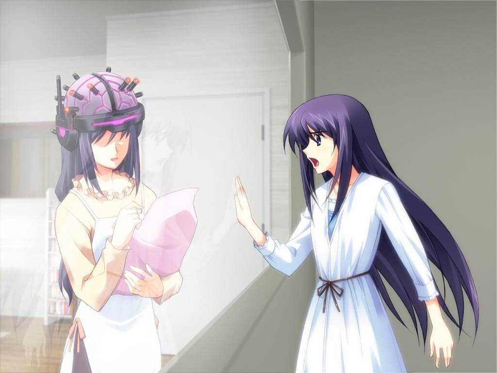
濑名和梢丢下拓巳离开了，梨深对拓巳强调自己会一直陪在他身边的原因只是不希望他觉醒。拓巳不顾梨深的劝阻，执意要回到自己记忆中的老家去见七海。然而，本应该是家的地方只是陌生的房屋，身后的梨深告诉他，这个世界上不存在他的归宿。因为眼前的这个宅男“拓巳”，只不过是Giga-Lo-Maniac的妄想产物罢了。拓巳这才发现，自己从小到大的记忆中的确缺失了很多关键的细节，因为他的记忆也只是人为制造的。
“将军”摇着轮椅穿过医院的走廊，身边经过的病人护士仿佛对他熟视无睹。他径直拐向尽头只有纯黑的“幕布”的走廊，进入了尽头那间隐藏着的病房。病房门口写着病人的名字：西条拓巳。
第9章 Giga-Lo-Maniac
梨深解答了拓巳对于“十字架”现场出现的“梨深”的疑问，原来Giga-Lo-Maniac过于强烈的妄想会相互影响并混和，而“十字架”现场就是多个具现化的妄想混合而成的产物。（妄想40：妄想被梨深中断）据梨深说，一年半以前，真正的西条拓巳用妄想创造了拥有强大妄想能力的他，但他的妄想却会削减真正的西条拓巳的生命。七海确实是实际存在的人类，但梨深没能保护好七海导致她被抓。话毕，梨深说自己要去找七海的绑架犯谈判就流着泪离开了。
梨深独自来到了“诺亚II”的所在地，与野吕濑玄一谈判，浑身血迹斑斑，右手腕断面还在滴落着鲜血的七海像耶稣一样被禁锢在他身边的一个刑架上。希科技的总裁野吕濑玄一是诺亚计划的总策划，也是让她拥有恐怖回忆的男人，直到一年半前他才刚刚放过了梨深。虽然野吕濑并没有阻止梨深接触七海，但七海仿佛认为是梨深抢走了拓巳送给她的手镯，而对她Di-Sword相向！梨深没想到七海竟然也是Giga-Lo-Maniac。野吕濑说与梨深那时候不一样，现在的希科技已经掌握了一套完善的觉醒方案，但这套方案却不适用于西条拓巳。野吕濑很轻松地就让梨深回想起了被迫觉醒时的恐惧而让她失去了战斗力。
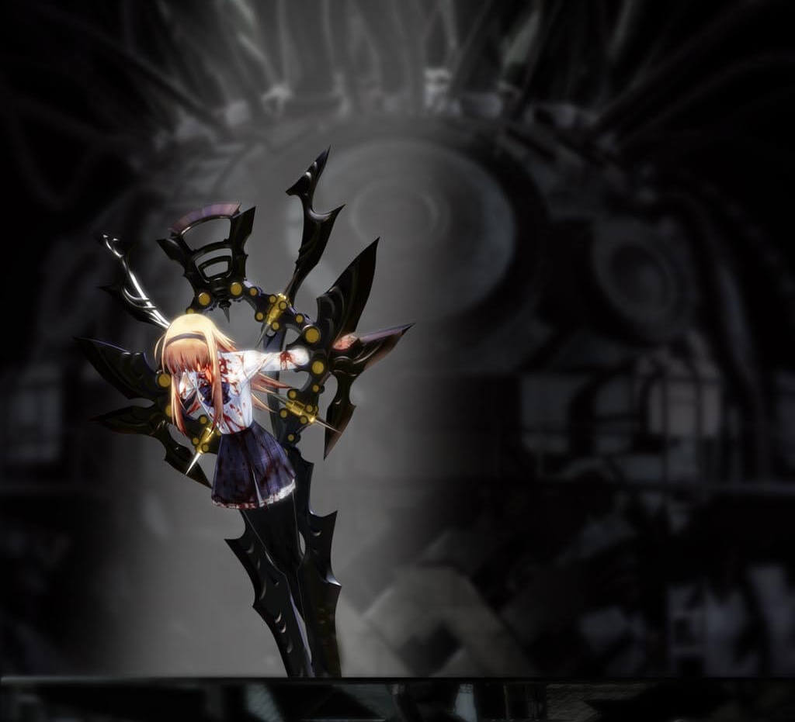
判安二和楠优爱从呕吐蛙专卖店回到情报公司，百濑告诉了两人对神光有限公司的调查结果，原来收购它的母公司正是希科技(Nozomi)集团。这家公司在被收购后就有着在周末发布新产品的习惯，而引力异常值开始出现周末激增特征的起始时间，正与神光公司被收购的时间一致。而且神光公司的创办人猪鼻康三正是明和党的议员，同时明和党也曾对地震和引力异常现象进行过报道管制。此外，除了引力异常值在周末和地震时的暴增，百濑还发现这五年中还有四起较高的上升，其发生时间恰好与日本国内的四次选举时间吻合。而五年前猪鼻康三加入了明和党，四年前明和党在选举中胜出成为了执政党。所有从未引人注意的细节都通过引力异常值这一线索联系到了一起。
判又提到了对濑名的调查情况。濑名的父亲波多野一成原为希科技的员工，但在半年前濑名的母亲和她仅一岁的妹妹神秘死亡，这之后一成就失踪了，濑名也逃出了她当时所寄宿的援助设施——天神寮。天神寮曾名为“ArcheartMedical会”，对外宣称是精神病治疗设施，FES的主唱岸本绫濑就曾在这里接受过精神方面的治疗。但在两年前它变更为非营利的援助设施“天神寮”，其精神科医生也全部转到了与猪鼻议员交情甚好的AH东京综合医院精神科供职。“脑残男”事件的受害者高科医生正是其中一员。据判调查，西条拓巳最近一个月去这所医院的精神科看了三次病，并且他的主治医生就是高科医生。但奇怪的是，拓巳的医疗记录从他十岁那年起就中断了，好像他自十岁开始就再也没有出过院一样。此外判还调查了与濑名走得很近的转学生折原梢，原来她的父亲也是希集团兄弟公司的职工。由于发生过梢的三个同学被不明凶手用利器砍断左手的事件，她才搬到了涩谷。据说折原梢当时就在案发现场，但最终因警方找不到凶器而没有逮捕她。这让判不由得想到了濑名凭空变出大剑的一幕。
正在这时，又一个警告判停止调查的匿名电话打了过来，但这次对面却传来了诹访虚弱的声音。他只说了自己在AH东京综合医院，电话就挂断了。判决定自己独自前去。
他走进夜晚的AH东京综合医院，里面空无一人，就连走廊上也一片漆黑。但让他没想到的是优爱也跟着他来了。判让她赶紧回去，自己则循着一阵脚步声登上了门诊楼楼顶，但却倒在了一声枪响之中——开枪的人竟然是诹访！
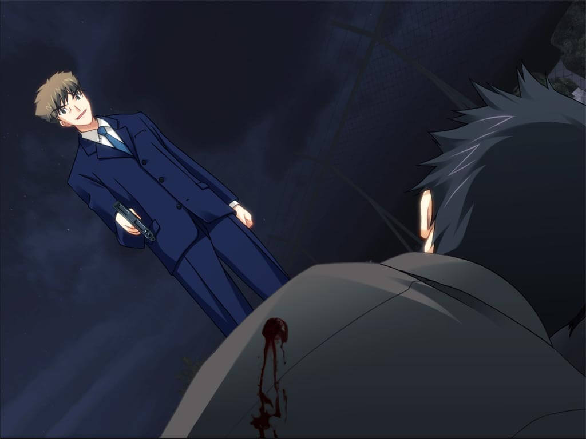
优爱独自在医院门口等待判归来时突然感受到一阵视线，但周围仍是一片漆黑与死寂，没有一个人影，除了……住院楼门口，竟出现了已死的美爱的身影！优爱追随着美爱的身影跑到了楼顶与“美爱”对峙，无论是她的身影衣着还是笑声都与妹妹美爱一模一样。在“美爱”的诱导下，优爱开始逐渐怀疑起了自己的身份，甚至准备从楼顶一跃而下。就在这关键时刻，一声枪响惊醒了她，但美爱立刻扑上来掐住了她的脖子。危急关头，隐藏在她视野中的“那个”却变得越来越清晰——优爱抽出了自己的Di-Sword。在这一刻，优爱认识到了自己拼命追查美爱的死因只是为了让自己安心，因为她害怕美爱是因自己而死。优爱挥剑砍向了虚假的“美爱”，幻象崩溃，眼前竟然是一名背着巨大背包的陌生男子！突然，另一把Di-Sword飞来，刺入了男子背后的背包，爆出了耀眼的电火花。这是一直在住院的绫濑赶到了现场，她说优爱也是古拉吉欧鲁的黑骑士之一。
拓巳在回家路上打电话给三住，但三住说他只记得自己是通过梨深认识的拓巳，并不记得确切的时间和详情；手机里七海保存的所谓家里的电话，打过去也只是空号。（妄想41：怕死而没有自杀；四次自杀）回到集装箱小屋，拓巳才注意到眼前这个集装箱会突兀地出现在一家公司的楼顶是多么的不合常理，但他从来没有怀疑过。（妄想42：让星来劝自己逃避现实；割腕自杀未遂）
拓巳的网友Grim告诉他，一小时之后涩谷十字路口会成为“祭典”，但拓巳现在并没有心情去在意这个。突然，门口传来了七海的敲门声。（妄想43：七海右手腕的伤口是“那道视线，是谁的？”刺字；七海的腐尸来敲门）但此时的拓巳已经并不关心七海的真伪了，他只求一死。但七海却说自己弄丢了拓巳送的手镯，而且她虽然一直故作坚强地照顾拓巳，但心中还是想让拓巳也关心一下自己的。七海说拓巳一定不是妄想，因为她还记得小时候和拓巳一起生活的记忆。自身存在得到证明的拓巳惊喜地抱向了七海，然而七海的身影却化作光点消失了。
绝望的拓巳向星来寻死，星来说只要追寻着“声音”就可以死去。但拓巳追着那若有若无的声音却来到了涩谷的十字路口，这里挤满了大群来看热闹的市民和记者。（妄想44：人群为他去死而声援鼓劲；人群将他刺杀）拓巳希望这疯狂的人群能杀死他，但“将军”的声音突然在他耳边响起，告诉他上次让拓巳当众出丑的人不是他，不过现在拓巳需要尽快入手Di-Sword以终结已经开始运行的“诺亚II”。涩谷的引力异常值已经上升到了一个超常的高度，这是一次无差别的人体试验。拓巳发现身边的民众都相互扭打在了一起，甚至还响起了枪声，现在已经没有人注意他了。这时，“将军”——真正的西条拓巳出现在了他面前，承认了拓巳就是他创造出来的，拓巳感受到的莫名的视线也是他的。他说，所有都是因他妄想出了“Ir2”公式而起，为了挽救这一切，行动不便的他才通过妄想创造出了拓巳，想让他作为另一个自己终结这场世界的灾难。“将军”还告诉拓巳，梨深现在的人格是她被希科技的觉醒实验折磨到崩溃后被妄想出来接管身体的，在这一个人格“自杀”前，两人的妄想在偶然间同步了，“将军”也说服了这个人格，成功协助梨深觉醒成为了Giga-Lo-Maniac，梨深也被希科技释放。没过多久，同住一所医院的梨深就找到了他的病房，虽然入院五年的“将军”只剩两年寿命了，但梨深也一直执意协助着他。不过梨深不同意“将军”的计划，她想拯救所有人，想让拓巳就这样平稳地生活下去，甚至决定代替拓巳前去破坏诺亚II。但现在梨深和七海都被诺亚计划的总策划，也是当年折磨梨深的直接黑手——野吕濑玄一抓住了。听完，拓巳认识到自己其实在与梨深相处的这一个半月中也喜欢上了梨深，他决定至少要把梨深先救出来。在心中的决意下，拓巳成功地从景色中抽出了Di-Sword，并通过思维盗摄从所有人的妄想中找出了携带诺亚II终端的“搬运工”——其中一名正是他见过多次的护士叶月，也是他的网友Grim——并破坏了所有终端。的确，Grim比“将军”还早地预言了“十字架”事件，以及之后与拓巳网上聊天时表现得就好像知道他就是西条拓巳一般。拓巳将她的记忆投影在了十字路口的巨型屏幕上，原来是她制造了“怀孕男”事件，那个孩子正是她在没有麻醉的情况下，独自为自己进行剖宫产所生下的孩子。但叶月只是平静地说这一切都是教祖的指示，就用手术刀自杀了。但就在这时，大地震颤着发出呻吟，天空被白色浸染，伴随着深入脑髓的耳鸣声……ThirdMelt——“诺亚II”的第三次启动，开始了。
第10章
妄想空间中的碧蓝天空下，“将军”告诉拓巳他患有先天性的早衰症，10岁以后身体就停止了发育并且不停衰老。“将军”说从小开始他在无意识的情况下就使用过很多次Giga-Lo-Maniac的能力，也承认了拓巳记忆中的那起车毁人亡的事故可能也是他所为。同时，滥用能力也导致了他体内反粒子的大量聚集，催生了这样的疾病。但即便如此，他还是动用能力创造了拓巳，因为他小时候偶然发现的Ir2公式被希科技发现并成立了“诺亚计划”，制成的“诺亚II”即是用于人为制造Giga-Lo-Maniac的装置，但直到“将军”遇到梨深他才首次发现这个邪恶计划。为了成功制造这一装置，希科技需要Giga-Lo-Maniac在使用能力时释放的脑电波样本，而希科技也掌握了一套通过折磨被试者使其经历了极端的负情绪后人体生物节律极端上升，从而觉醒成为Giga-Lo-Maniac的方法。拓巳这段时间历经的“谜之视线”以及来自“将军”的骚扰和恐吓都是为了让他早日觉醒的手段。梨深多次要求杀掉拓巳也是为了延长“将军”的寿命。然而，在拓巳已经觉醒的现在，“将军”的寿命估计只剩一到两天了。“将军”请求拓巳一定要直接破坏“诺亚II”本体，终结希科技的邪恶计划。
绫濑和优爱与情报贩子百濑会合的时候，四周已经成为了一片废墟，新闻中播报涩谷发生了7级大地震。判刑警终究没能回来，绫濑又坚称“古拉吉欧鲁”已经觉醒，优爱和百濑也只有随她一起去寻找其他的“黑骑士”。三人在半路上遇到了虚弱的七海，她的右手现在是未具现化的妄想状态，据七海说是梨深救了她。绫濑想起梨深那天在医院请求她不要再接近拓巳以避免拓巳觉醒的话，有些不悦。正在这时，四人站立的地面突然崩塌了，她们一起掉了下去。
拓巳醒来时四周也是一片狼藉，“将军”也因冲击而陷入了昏迷。拓巳背起“将军”，决定去寻找前诺亚计划的成员，濑名的父亲波多野一成。半路上拓巳发现了掉落到地铁废墟中的绫濑等四人，他通过与绫濑同步妄想并形成共同认识的方法救出了四人，也告诉了七海真相，七海也想起了自己多年以来努力照顾的那个身患重病的哥哥，在最后一次见面时篡改了她的记忆，让她相信这个妄想出的宅男是她的哥哥。七海握着从“将军”怀里掉落的她宝贵的手镯，微笑着承认了拓巳也是她真正的哥哥。优爱也向拓巳表达了自己的歉意。拓巳将重伤的七海和昏迷的“将军”托付给百濑照看，并拜托优爱和绫濑分头寻找波多野一成，自己则去寻找诺亚II的所在地。
Crying Sky (Ending B)
另一边，濑名带着昏迷的梢在破坏的车站见到了她的父亲波多野一成与罪魁祸首野吕濑玄一，濑名盛怒之下斩下野吕濑的头，却发现她杀的是父亲一成，而之前的一成变成了诹访！从不远处路过的拓巳听见了濑名心声的哀鸣，循声赶来，但却遭到了诹访的心灵攻击。
拓巳看到了一系列从未见过的景象。第一个场景是诹访接到了天成神光会教主的一项修行命令，让他和叶月引发一系列猎奇杀人事件，以期动摇西条拓巳的心理，还要求他牺牲他爱人叶月腹中八个月大的孩子以获取“神光的救赎”。第二个场景是“集体跳楼”事件的楼顶，拓巳作为五名牺牲者之一，面对渐渐逼近的上百个手握刃具的普通市民，被逼到了楼顶边缘。但这时从头顶传来了“那道视线，是谁的？”的声音，五人眼前竟出现了通向不存在之大楼的楼梯。然而楼梯终为虚空，五人也被摔得粉身碎骨。下一个场景是拓巳被一个戴着暗黑绝地武士头盔的人袭击，接着在手术室被叶月志乃剖开腹部，并塞入她自己的孩子，随后被那个戴着暗黑绝地武士头盔的人粗暴地缝合伤口。接下来的场景是“十字架”事件，拓巳作为那个被逮捕的男人与一个戴着暗黑绝地武士头盔的人擦肩而过，随即认为自己的女人被眼前突然出现的太田教授骚扰而掐死了他，但无论他怎样使劲太田都能再次站立起来。他想起听过的PHANTASM歌词，捡起地下的十字锥和锤子……随后场景再次变成手术室，拓巳眼睁睁地看着自己体内的血液正被一点点抽干。随后拓巳又变成了高科医生，他被暗黑绝地武士袭击，又被叶月锯开头盖骨，用勺子一点点刮除脑组织。接下来拓巳变成了一名腹中饥饿的女性，而路过的暗黑绝地武士告诉她她右手中的烤串很美味，于是她在剧痛中吃掉了自己的右手，但骨头卡住了气管，脚踝还被暗黑绝地武士用绳子绑住，最终窒息。最后的场景中，拓巳是一个被打得惨不忍睹的混混，被他们的委托人——一个戴着暗黑绝地武士头盔的男人手下的一只怪兽生生地拦腰扯断。
诹访和青梅竹马叶月志乃从小就一起生活，两人的双亲也都是天成神光会的信徒。在“新世代”事件中，教祖通过天成神光会的势力对媒体和警方进行控制，希科技提供诺亚系统的终端，让两人成功制造了一系列惨案，并将拓巳逼上绝路，就是为了让他成为Giga-Lo-Maniac或是逼出拓巳原型，采集他的代码样本。接下来，只需要拓巳和折原梢的代码样本，诺亚II就能真正完成了。
拓巳醒来时梢正在被野吕濑折磨。在梨深心声的鼓励下，拓巳趁对他放松警惕的野吕濑不备，拔出Di-Sword破坏了诺亚II。两个月后，所有人一同开开心心地过上了新学期，大家还都对拓巳好感满点……吗？
野吕濑的出现昭示着一切都只是拓巳的妄想，而失去一切的拓巳选择继续沉溺于妄想之中。化为废墟的城市中，梨深杀死了心灵崩溃，濒死的拓巳，帮他从短暂而悲惨的一生中解脱。但是，他们从前一同凝望的那片蔚蓝天空，却再也回不来了。
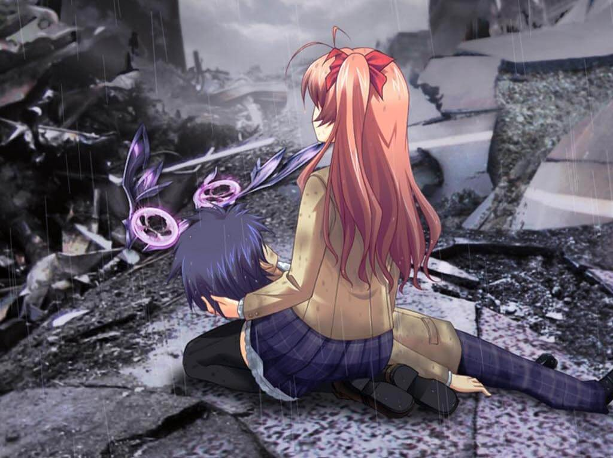
Silent Sky (Ending A) / Blue Sky (True Ending)
另一边，濑名和梢在被破坏的车站找到了她的父亲波多野一成，本想直接杀死父亲的濑名在当面对峙时心里也不禁产生了动摇。正在这时，诹访从暗处向濑名开了一枪，一成提前反应推开了濑名，自己却被击杀。愤怒的濑名正想冲过去找诹访算账，自己和梢却陷入了诺亚II终端的精神攻击中。不过，梢心声中的求救声被从不远处路过的拓巳接收，他循声赶来肯定了梢的人格，同时也治好了梢的心病和失语症。即便诹访可以通过背上的诺亚II终端行使与Giga-Lo-Maniac相同的能力，但拓巳通过妄想同调将诹访对他造成的伤害投影到了诹访自己身上，杀死了他。悲痛的濑名告诉了拓巳诺亚II的详细位置，并拜托拓巳一定要破坏掉诺亚II。
诺亚II装置旁，野吕濑玄一利用诺亚II的能力让议员猪鼻康三和天成神光会教祖仓持雄大自相残杀，打算独占诺亚II。他放了七海但却将梨深扣下作为人质，正是为了引诱拓巳以获取他的代码样本来改进诺亚II。
突破了半路上星来的幻觉之后，遍体鳞伤的拓巳终于来到了诺亚II旁边，与野吕濑玄一对峙。野吕濑告诉拓巳自己小时候觉醒为Giga-Lo-Maniac后，看到了太多的人心之恶，他现在打算使用诺亚II消除人类所有的负面思想以达到社会稳定以及世界和平。拓巳与野吕濑开始恶战，但拓巳完全不是野吕濑的对手，好不容易接近了诺亚II，却在“请让过”的旋律中被诺亚II的自卫系统扭曲了意志，根本无法接近诺亚II。身体被野吕濑的攻击腰斩，精神也在诺亚II的攻击中被溶解，甚至已经失去了对自己存在的认知。正在这时，与自己相识的少女们为拓巳进行的祈祷形成了共同认识。众人间的羁绊肯定了拓巳的存在，也让他认清了自己虽然是妄想的产物，但仍旧是一个独立的个体而非其他人的替代物。“将军”也欣慰地把他最后的力量托付给了拓巳。饱含其余六人祈祷的六把Di-Sword出现在拓巳身后，并与他自己的Di-Sword融为一体。拓巳利用了野吕濑的妄想，通过使身体溶化并再次重塑无效化了野吕濑的一切物理攻击。然后他用Di-Sword中的反粒子钳住野吕濑，以他为刃绕过了诺亚II的自卫系统，成功摧毁了诺亚II装置。
剧烈的爆炸之后，梨深找到了废墟中的拓巳。她想杀死拓巳以延长真正的西条拓巳的生命，但对拓巳的爱却让她无法下手。而就在此时，他们感受到真正的拓巳死去了，而他的记忆也继承到了拓巳脑中。淅沥的细雨悄然停止，厚重的铅云倏然退散，从前他与梨深只能在妄想中凝望的蓝天，终于向所有人展露了它的笑颜。（完）
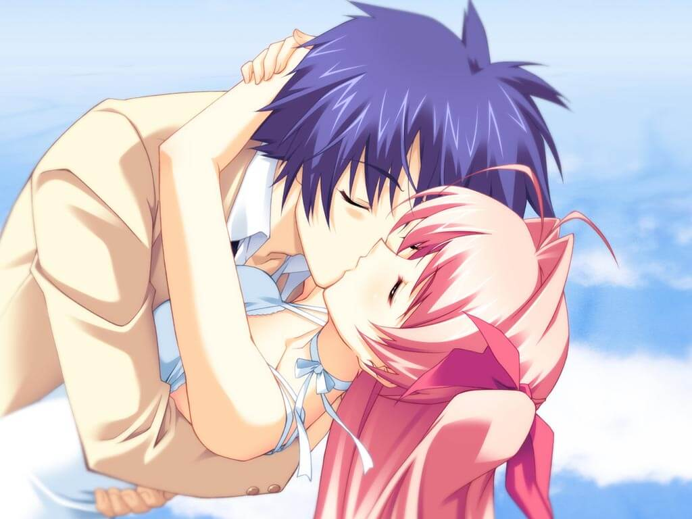